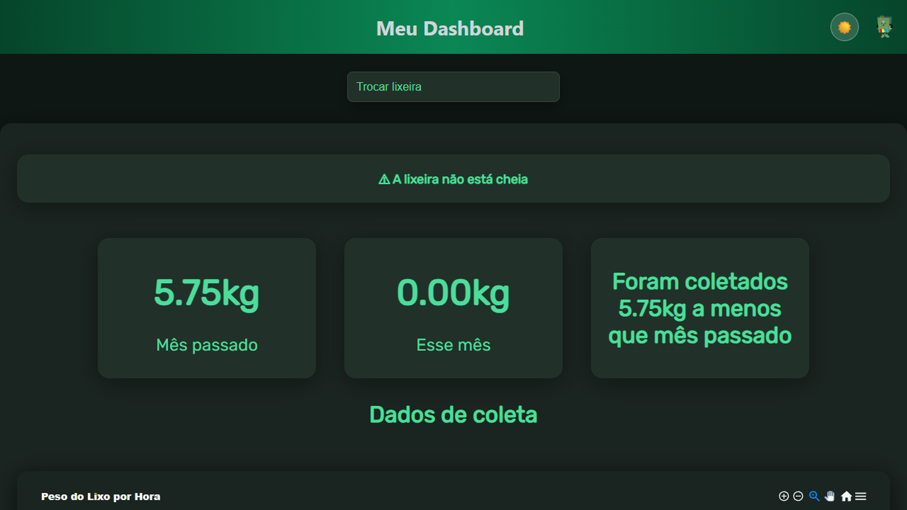
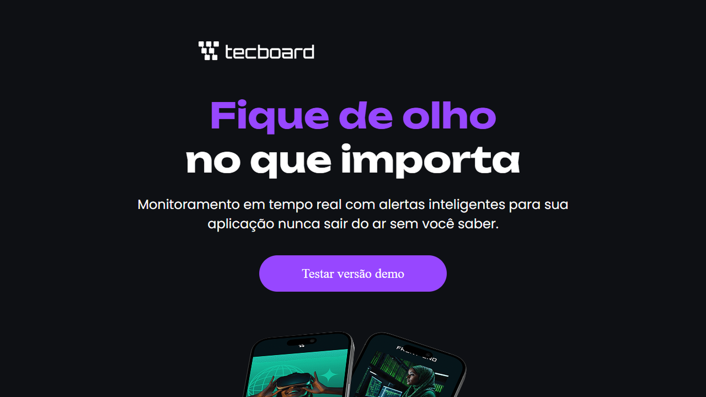
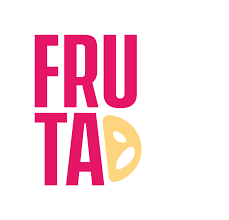

Projeto pessoal · 2026 · Em desenvolvimento
Este portfólio

Site pessoal criado para apresentar meus projetos, minha formação e minha evolução na área de desenvolvimento de software.
Desenvolvimento de software
Sou estudante de Engenharia da Computação no CESUPA, apaixonado por tecnologia e por transformar ideias em projetos. Desenvolvo software do planejamento à publicação, e aqui você conhece um pouco da minha trajetória, dos projetos que já construí e do que estou construindo agora.
O que venho construindo.
Projeto pessoal · 2026 · Em desenvolvimento
Site pessoal criado para apresentar meus projetos, minha formação e minha evolução na área de desenvolvimento de software.
TCC · 2026 · Em desenvolvimento

Lixeira inteligente criada no Amazon Hacking 2025 que pesa cada descarte e envia os dados para um dashboard, ajudando a otimizar a coleta de lixo.
Curso Alura · 2026 · Concluído

Landing page construída em HTML e CSS a partir de um layout no Figma, durante o curso da Alura.
Prazer, Marco.
Estou no último ano de Engenharia da Computação no CESUPA (Centro Universitário do Pará), com conclusão prevista para dezembro de 2026. Na graduação construí uma base em lógica, programação e fundamentos de computação, e hoje direciono isso para o desenvolvimento de software.
Minha primeira experiência profissional foi na Agência Fruta, atendendo a Beauty Fair. Ali aprendi a trabalhar com prazos, com muitas demandas ao mesmo tempo e com pessoas diferentes pedindo coisas diferentes, uma rotina que levo para qualquer equipe.
Hoje aprofundo meus estudos em desenvolvimento de software e coloco em prática nos projetos que estão aqui. Busco minha primeira oportunidade como desenvolvedor, em uma equipe onde eu possa contribuir, aprender com quem tem mais experiência e continuar evoluindo.
Trajetória profissional.

Estágio · a
Atuei na Agência Fruta, agência de marketing digital, na equipe que atendia a Beauty Fair, empresa que realiza alguns dos maiores eventos do setor de beleza da América Latina. Em um ambiente de alto volume de demandas, dava suporte a vários responsáveis ao mesmo tempo, cada um cuidando de um perfil diferente da marca no Instagram, e organizava as tarefas simultâneas de acordo com o prazo e a prioridade de cada uma.
Também participei da organização e da programação das publicações nas redes sociais, acompanhando as demandas pelo Notion. Essa experiência desenvolveu minha capacidade de organização, comunicação, definição de prioridades e adaptação a diferentes demandas.
Formação e cursos.
Graduação · conclusão em dezembro de 2026
Centro Universitário do Pará — CESUPA
Cursos
Alura · 2026
CertificadoCisco Networking Academy · SENAI/PA · 2025
CertificadoVamos conversar.
Estou em busca da minha primeira oportunidade como desenvolvedor. Se você tem uma vaga, um projeto ou quer trocar uma ideia, é só me chamar por um destes canais.